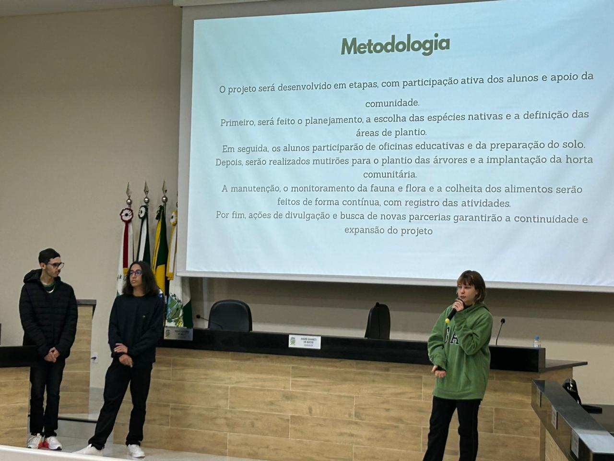
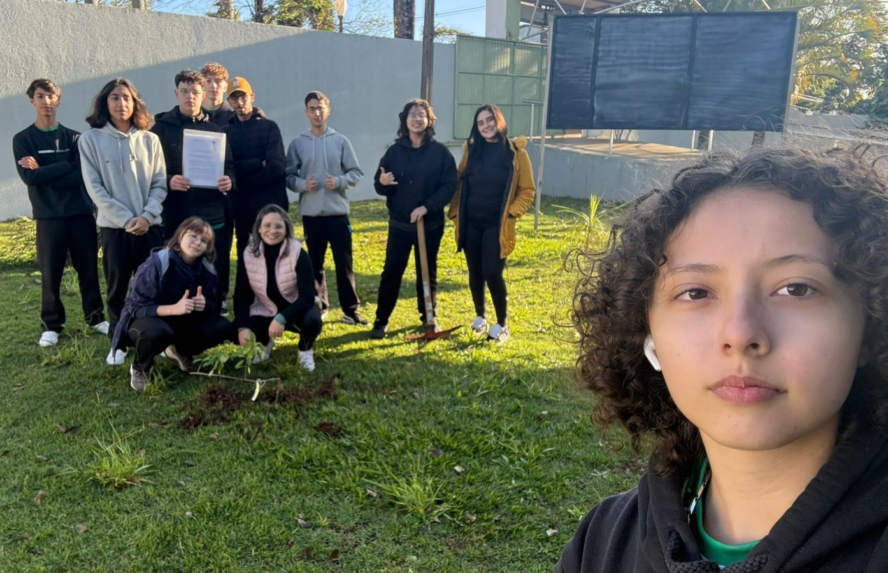

Gislaine
Idealizadora
O projeto "Verde que Alimenta" tem como objetivo promover a sustentabilidade e a segurança alimentar por meio do plantio de árvores frutíferas nativas e da criação de uma horta escolar comunitária em Ibaiti. A iniciativa busca integrar a comunidade em ações de cuidado com o meio ambiente, fortalecendo a biodiversidade local e estimulando a produção de alimentos saudáveis e acessíveis. Além de contribuir com a preservação de espécies nativas e a melhoria da qualidade do solo e do ar, o projeto também incentiva a educação ambiental, o trabalho coletivo e a valorização do espaço urbano como território fértil e produtivo. Ao unir natureza e comunidade, o "Verde que Alimenta" semeia um futuro mais justo, verde e colaborativo.

A necessidade de promover a consciência ambiental e fortalecer os laços entre escola e comunidade por meio de ações práticas e educativas. Diante da importância da arborização urbana e da preservação da biodiversidade, a iniciativa busca transformar espaços ociosos em áreas verdes produtivas e sustentáveis. Com o plantio de árvores frutíferas nativas e a criação de uma horta escolar comunitária, o projeto tem como objetivo geral incentivar o protagonismo estudantil, melhorar a qualidade de vida local e despertar o cuidado com o meio ambiente, a alimentação saudável e a cidadania em Ibaiti.

O projeto "Verde que Alimenta" será desenvolvido em etapas claras e interconectadas, garantindo a participação ativa dos alunos, a orientação dos professores e o envolvimento da comunidade. O objetivo é criar um processo educativo e prático que resulte na implementação bem-sucedida das árvores frutíferas nativas e da horta escolar comunitária.
O projeto “Verde que Alimenta” transforma a realidade de Ibaiti ao unir educação, meio ambiente e cidadania. Ao plantar árvores frutíferas nativas e criar uma horta escolar comunitária, promove a melhoria da qualidade do ar, o embelezamento dos espaços e o bem-estar da população. Além disso, contribui para a preservação da biodiversidade, atraindo aves e polinizadores essenciais para o equilíbrio do ecossistema local. A horta fornece alimentos saudáveis, estimula hábitos alimentares conscientes e fortalece a segurança alimentar da comunidade escolar. Mais do que um projeto, é uma ação coletiva que une alunos, professores, famílias e voluntários em torno do cuidado com o meio ambiente, despertando o senso de responsabilidade, solidariedade e pertencimento. Essa iniciativa planta hoje as sementes de um futuro mais verde, saudável e participativo para toda a cidade.
O projeto "Verde que Alimenta" representa o compromisso da Escola Antônio Martins de Mello com a sustentabilidade, a educação ambiental e o bem-estar da comunidade de Ibaiti. Ao unir o plantio de árvores frutíferas nativas com a criação de uma horta escolar comunitária, buscamos transformar a escola em um espaço mais verde, saudável e educativo. Com o protagonismo dos alunos e o apoio de professores, pais, voluntários, poder público e parceiros locais, essa iniciativa pretende cultivar não apenas plantas, mas também consciência ecológica, responsabilidade social e um futuro mais justo e sustentável para todos.

Idealizadora
Idealizadora
Idealizador
Idealizador
Calaboradora
Calaborador
Calaboradora
Colaborador
Colaboradora
Colaboradora
Colaboradora